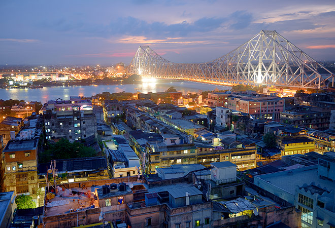

I am from W.B(West Bengal),I study in Std 7B at TIGPS(Techno India Group Public School).My hobbies are playing guitar,coding,dancing playing video games😁.I also am the 1st ranker in Spell Bee in my class.I love my parents and my BFF very much.I love to watch Horror movies👻.I am also a K-Drama lover.My favourite K-Pop band is BTS💜,my favourite K-Drama is Tail of the Nine Tailed and Suspicious Partner,My favourite K-Actor/Actress are Lee-Min ho,Lee-Dong Wook,Hyun Bin,Park Shin-hye, Ji Chang-Wook,Park Min-Young and Son Ye-Jin.My dream destination is South Korea(🇰🇷) as well as Paris(🗼).
West Bengal, Bengali: Paschim Banga is a state in the eastern region of India along the Bay of Bengal. With over 91 million inhabitants, it is the fourth-most populous state and the fourteenth-largest state by area in India. Covering an area of 88,752 km2 (34,267 sq mi), it is also the eighth-most populous country subdivision of the world. Part of the Bengal region of the Indian subcontinent, it borders Bangladesh in the east, and Nepal and Bhutan in the north. It also borders the Indian states of Odisha, Jharkhand, Bihar, Sikkim and Assam. The state capital is Kolkata, the third-largest metropolis, and seventh largest city by population in India. West Bengal includes the Darjeeling Himalayan hill region, the Ganges delta, the Rarh region and the coastal Sundarbans. The state's main ethnic group are the Bengalis, with the Bengali Hindus forming the demographic majority. The area's early history featured a succession of Indian empires, internal squabbling, and a tussle between Hinduism and Buddhism for dominance. Ancient Bengal was the site of several major Janapadas, while the earliest cities date back to the Vedic period. The region was part of several ancient pan−Indian empires, including the Vangas, Mauryans, and the Guptas. The citadel of Gauḍa served as the capital of the Gauḍa Kingdom, the Pala Empire, and the Sena Empire. Islam was introduced through trade with the Abbasid Caliphate, but following the Ghurid conquests led by Bakhtiyar Khalji and the establishment of the Delhi Sultanate, the Muslim faith spread across the entire Bengal region. During the Bengal Sultanate, the territory was a major trading nation in the world, and was often referred by the Europeans as the "richest country to trade with". It was absorbed into the Mughal Empire in 1576. Simultaneously, some parts of the region were ruled by several Hindu states, and Baro-Bhuyan landlords, and part of it was briefly overrun by the Suri Empire. Following the death of Emperor Aurangzeb in the early 1700s, the proto-industrialised Mughal Bengal became a semi-independent state under the Nawabs of Bengal, and showed signs of the first Industrial revolution. The region was later conquered by the British East India Company at the Battle of Plassey in 1757 and became part of the Bengal Presidency.